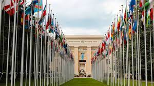

Before Sierra Leone goes to the polls, a training Officer is reading a tactile ballot guide to ensure persons with disabilities know how to vote (2018).
PHOTO:UNDP Sierra Leone/Lilah GaafarWATCH
Through funding provided by the World Intellectual Property Organization (WIPO), and in collaboration with Argentinian publishers, Tiflolibros, a digital library for the blind, has produced 800 educational books in Spanish.
Even under normal circumstances, persons with disabilities—one billion people worldwide— are less likely to access health care, education, employment and to participate in the community. They are more likely to live in poverty, experience higher rates of violence, neglect and abuse, and are among the most marginalized in any crisis-affected community. For the visually impaired, life under lockdown has posed several issues in terms of independence and isolation, especially for people who rely on the use of touch to communicate their needs and access information. The pandemic has revealed how critically important it is to produce essential information in accessible formats, including in Braille and audible formats. Otherwise, many persons with disabilities could face a higher risk of contamination due to a lack of access of guidelines and precautions to protect and reduce the spreading of a pandemic. COVID-19 has also emphasized the need to intensify all activities related to digital accessibility to ensure digital inclusion of all people. During the COVID-19 pandemic, many good practices have been implemented by parts of the United Nations system to promote a disability-inclusive response to the COVID-19 and disseminate information in Braille. In Malawi, the United Nations Development Programme (UNDP) has produced 4,050 braille materials on awareness and prevention of COVID-19. In Ethiopia, the Office of the United Nations High Commissioner for Human Rights (OHCHR) disseminated audio information, and education and communication materials, to media professionals, and has developed Braille versions of the educational messages. UNICEF has produced guidance notes that are available in multiple languages and accessible formats (including Braille and ‘easy-to-read’). ‘COVID-19: Considerations for Children and Adults with Disabilities’ addresses such issues as access to information; water, sanitation and hygiene; health care; education; child protection; and mental health and psychosocial support, as well as considerations for an inclusive workplace. World Braille Day, celebrated since 2019, is observed to raise awareness of the importance of Braille as a means of communication in the full realization of the human rights for blind and partially sighted people.
Braille is a tactile representation of alphabetic and numerical symbols using six dots to represent each letter and number, and even musical, mathematical and scientific symbols. Braille (named after its inventor in 19th century France, Louis Braille) is used by blind and partially sighted people to read the same books and periodicals as those printed in a visual font. Braille is essential in the context of education, freedom of expression and opinion, as well as social inclusion, as reflected in article 2 of the Convention on the Rights of Persons with Disabilities.

"Writing Peace" is a manual that invites young audiences to become aware of the interdependence of cultures through familiarization with contemporary writing systems, their history, and their mutual borrowings. It provides a concrete introduction to many writing systems, including Braille.
International Literacy Day (8 September) International Day of Persons with Disabilities (3 December) International Day of Sign Languages (23 September) Human Rights Day (10 December) International Universal Health Coverage Day (12 December) International Day of Epidemic Preparedness (27 December)
International days and weeks are occasions to educate the public on issues of concern, to mobilize political will and resources to address global problems, and to celebrate and reinforce achievements of humanity. The existence of international days predates the establishment of the United Nations, but the UN has embraced them as a powerful advocacy tool. We also mark other UN observances.